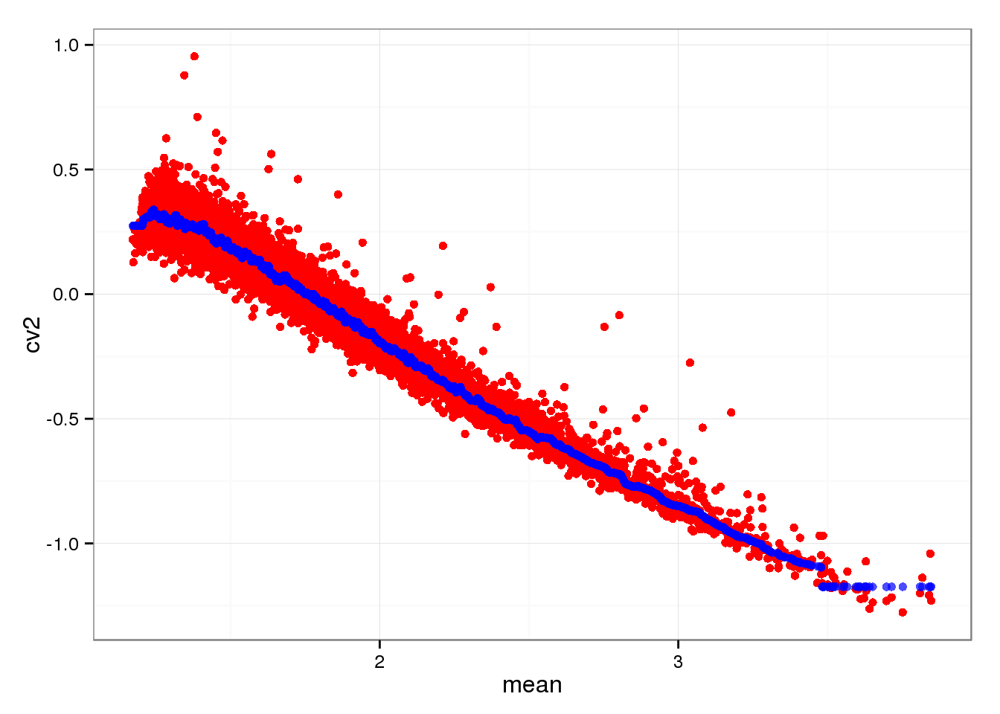
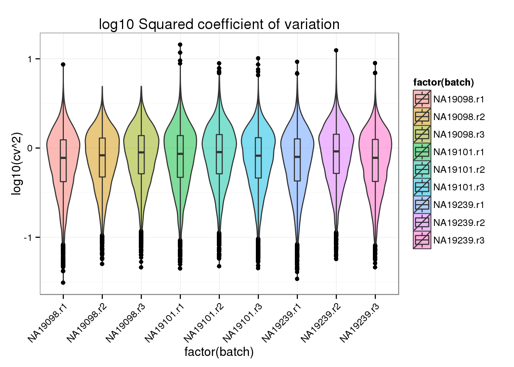
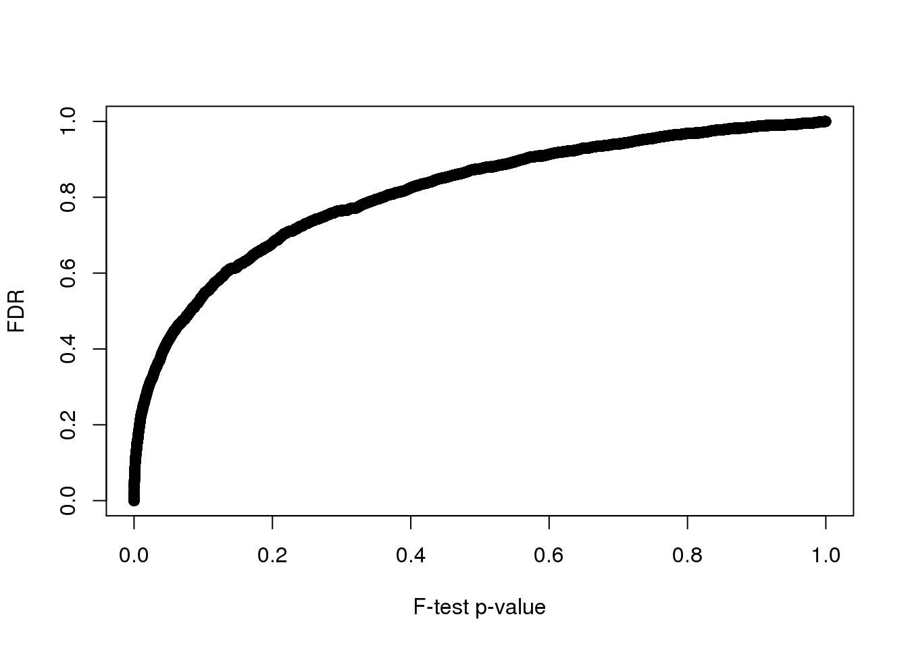
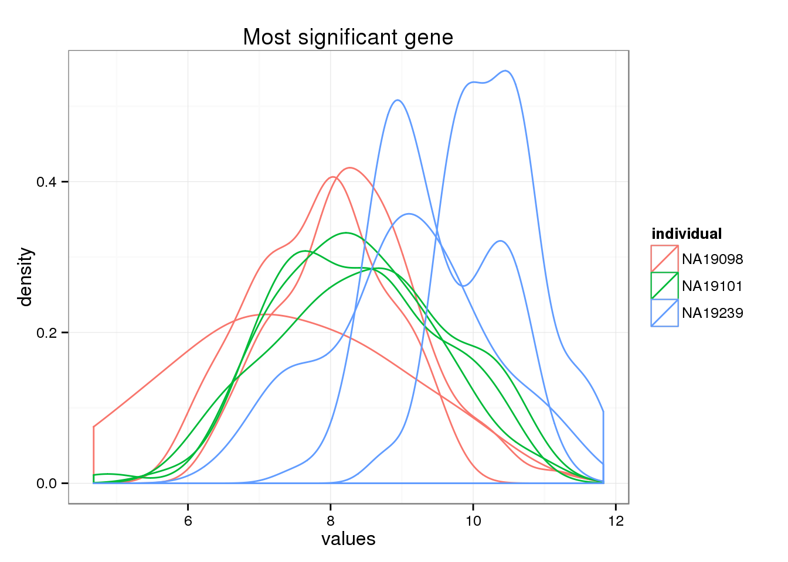
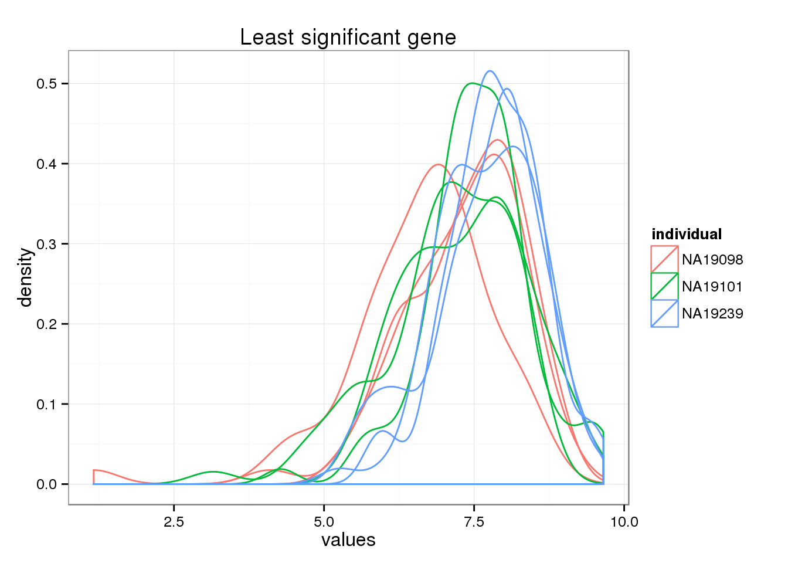
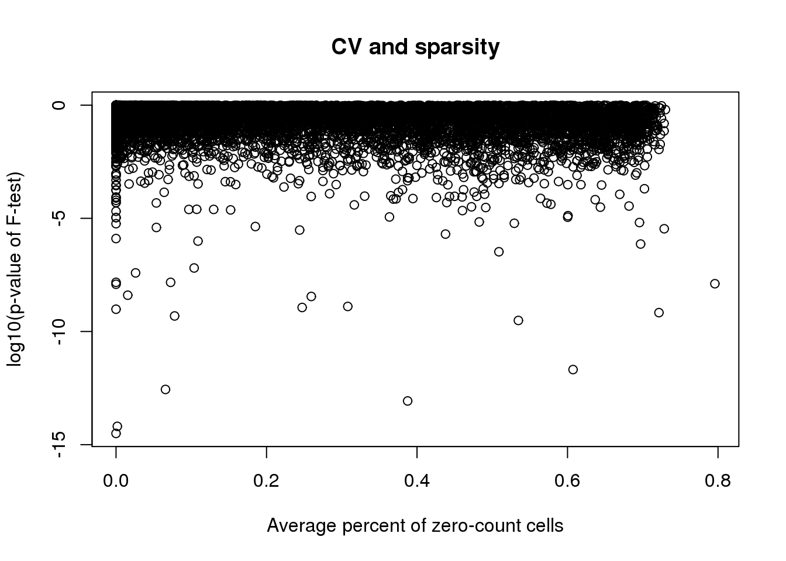

Compare CVs
Joyce Hsiao
2015-10-13
Last updated: 2015-10-14
Code version: ad00494d79195dafacf84a4ae0b08314007456b3
Objective
We would like to use per gene coefficient of variation as a metric of heterogeneity comparison between genes and across cells. We know that coefficient of variation at the gene level is dependent on the mean gene expression levels, a well known phenomena in the analysis of seqencing data, not limited to RNA-seq.
Kolodziejczyk et al. 2015 surveyed the transcriptome profiles of mESCs cultured in three different conditions and propose DM (distance-to-the-median), a corrected version of CV that is independent of the mean, as a metric of heterogenity comparison. This idea was first proposed in Kalmar et al. 2009.
Here, we will follow their method in removing the dependency of coefficient of variation on the mean gene expression. Then, these “normalized” coefficient of variation will be compared via standard linear regression where individual is treated as a fixed effect.
The results below will show that after this normalization step, the coefficient of variations no longer has a polynomial relationship with mean gene molecule count.
Model
$$log10(CV_{gk}) = log10(\mu_g) + \epislon_{gk}$$
where $\epislon_{gk}$ is independent distributed across genes and samples.
Set up
library("data.table")
library("dplyr")
library("limma")
library("edgeR")
library("ggplot2")
library("grid")
library("zoo")
theme_set(theme_bw(base_size = 12))
source("functions.R")Prepare data
Input annotation of only QC-filtered single cells
anno_qc <- read.table("../data/annotation-filter.txt", header = TRUE,
stringsAsFactors = FALSE)
head(anno_qc) individual replicate well batch sample_id
1 NA19098 r1 A01 NA19098.r1 NA19098.r1.A01
2 NA19098 r1 A02 NA19098.r1 NA19098.r1.A02
3 NA19098 r1 A04 NA19098.r1 NA19098.r1.A04
4 NA19098 r1 A05 NA19098.r1 NA19098.r1.A05
5 NA19098 r1 A06 NA19098.r1 NA19098.r1.A06
6 NA19098 r1 A07 NA19098.r1 NA19098.r1.A07Input molecule counts that are filtered, transformed, and also processed to remove unwanted variation from batch effet. ERCC genes are also removed.
molecules_qc <- read.table("../data/molecules-final.txt", header = TRUE, stringsAsFactors = FALSE)Input moleclule counts before log2 CPM transformation.
molecules_filter <- read.table("../data/molecules-filter.txt", header = TRUE, stringsAsFactors = FALSE)
molecules_filter <- molecules_filter[which(rownames(molecules_filter) %in% rownames(molecules_qc)), ]
stopifnot(dim(molecules_filter) == dim(molecules_qc))Compute coefficient of variation
Compute per batch coefficient of variation.
Include only genes with positive coefficient of variation. Some genes in this data may have zero coefficient of variation, because we include gene with more than 0 count across all cells.
molecules_cv_batch <-
lapply(1:length(unique(anno_qc$batch)), function(per_batch) {
molecules_per_batch <- 2^molecules_qc[ , unique(anno_qc$batch) == unique(anno_qc$batch)[per_batch] ]
mean_per_gene <- apply(molecules_per_batch, 1, mean, na.rm = TRUE)
sd_per_gene <- apply(molecules_per_batch, 1, sd, na.rm = TRUE)
cv_per_gene <- data.frame(mean = mean_per_gene,
sd = sd_per_gene,
cv = sd_per_gene/mean_per_gene)
rownames(cv_per_gene) <- rownames(molecules_qc)
cv_per_gene <- cv_per_gene[rowSums(is.na(cv_per_gene)) == 0, ]
cv_per_gene$batch <- unique(anno_qc$batch)[per_batch]
# Add sparsity percent
molecules_count <- molecules_filter[ , unique(anno_qc$batch) == unique(anno_qc$batch)[per_batch]]
cv_per_gene$sparse <- rowMeans(as.matrix(molecules_count) == 0)
return(cv_per_gene)
})
names(molecules_cv_batch) <- unique(anno_qc$batch)
dim(molecules_cv_batch[[1]])[1] 10483 5Distance-to-the-median
*This method was designed for comparison of variation profile across genes, while we are intersted in comparison of heterogeneity profiles on a per-gene basis.
The computation of DM for gene i in Kolodziejczyk et al. (2015) involves two steps:
- Correct for mean dependency:
- log10 (CV^2 / rolling median log10 of squared CV)
- Correct for dependency on gene length
- Corrected CV - gene length (union of all exons); equivalently, log10 of CV on count scale divided by gene length
In studies that count reads instead of molecules, gene length is a possible confounder in expression levels. However in our study, UMI is used to count the number of RNA molecules in each cell. Hence, we may not need to adjust coefficient of variation for correlation with gene lenght.
Merge summary data.frames.
df_plot <- do.call(rbind, molecules_cv_batch)Compute rolling medians.
We take the rolling medians of squared coefficient of variation across samples, along the order of the genes by their mean molecule count. We then substract each gene’s corresponding medians from the sample’s log10 squared coefficient of variation.
As we can see from the scatter plots below, the log10 squared coefficient of variation show a symmetric distribuion
# Compute a data-wide coefficient of variation on CPM normalized counts.
data_cv <- apply(2^molecules_qc, 1, sd)/apply(2^molecules_qc, 1, mean)
# Order of genes by mean expression levels
order_gene <- order(apply(2^molecules_qc, 1, mean))
# Rolling medians of log10 squared CV by mean expression levels
roll_medians <- rollapply(log10(data_cv^2)[order_gene], width = 50, by = 25,
FUN = median, fill = list("extend", "extend", "NA") )
ii_na <- which( is.na(roll_medians) )
roll_medians[ii_na] <- median( log10(data_cv^2)[order_gene][ii_na] )
names(roll_medians) <- rownames(molecules_qc)[order_gene]
# re-order rolling medians
reorder_gene <- match(rownames(molecules_qc), names(roll_medians) )
head(reorder_gene)[1] 225 3650 4564 6158 3352 1963roll_medians <- roll_medians[ reorder_gene ]
head(names(roll_medians))[1] "ENSG00000237683" "ENSG00000188976" "ENSG00000187608" "ENSG00000188157"
[5] "ENSG00000078808" "ENSG00000176022"head(rownames(molecules_qc))[1] "ENSG00000237683" "ENSG00000188976" "ENSG00000187608" "ENSG00000188157"
[5] "ENSG00000078808" "ENSG00000176022"Double-check the computation of rolling median.
ggplot(data.frame(cv2 = log10(data_cv^2),
roll_medians = roll_medians,
mean = log10(apply(2^molecules_qc, 1, mean) ) ) )+
geom_point(aes(x = mean, y = cv2), col = "red") +
geom_point(aes(x = mean, y = roll_medians), col = "blue", alpha = .7)
Compute adjusted coefficient of variation.
# adjusted coefficient of variation on log10 scale
log10cv2_adj <-
lapply(1:length(molecules_cv_batch), function(per_batch) {
foo <- log10(molecules_cv_batch[[per_batch]]$cv^2) - roll_medians
return(foo)
})
df_plot$log10cv2_adj <- do.call(c, log10cv2_adj)Adjusted squared coefficient of variation versus log10 mean count (CPM corrected).
ggplot( df_plot, aes(x = log10(mean), y = log10cv2_adj) ) +
geom_point( aes(col = as.factor(batch)), cex = .6 ) +
facet_wrap( ~ batch) +
labs(x = "log10(Mean CPM)", y = "log10(Adjusted Squared coefficient of variation") 
Coefficient of variation before adjustment.
ggplot(df_plot, aes(x= factor(batch), y = log10(cv^2), fill = factor(batch) ) ) +
geom_violin(alpha = .5) +
geom_boxplot(alpha = .01, width = .2, position = position_dodge(width = .9)) +
labs(title = "log10 Squared coefficient of variation") +
theme(axis.text.x = element_text(hjust=1, angle = 45))
Coefficient of variation after adjustment.
ggplot(df_plot, aes(x= factor(batch), y = log10cv2_adj, fill = factor(batch) ) ) +
geom_violin(alpha = .5) +
geom_boxplot(alpha = .01, width = .2, position = position_dodge(width = .9)) +
labs(title = "log10 adjusted Squared coefficient of variation") +
theme(axis.text.x = element_text(hjust=1, angle = 45))
Compare adjusted CVs
limma
library(limma)
df_limma <- matrix(df_plot$log10cv2_adj,
nrow = nrow(molecules_qc), ncol = 9, byrow = FALSE)
design <- data.frame(individual = factor(rep(unique(anno_qc$individual), each = 3) ),
rep = factor(rep(c(1:3), times = 3)) )
colnames(df_limma) <- with(design, paste0(individual, rep))
fit_limma <- lmFit(df_limma, design = model.matrix( ~ individual, data = design))
fit_limma <- eBayes(fit_limma)Voom plot
voom(10^df_limma, design = model.matrix(~individual, data = design),
plot = TRUE)
An object of class "EList"
$E
NA190981 NA190982 NA190983 NA191011 NA191012 NA191013 NA192391
[1,] 6.938583 6.719987 6.937170 6.666742 7.074477 7.415754 7.068700
[2,] 7.441367 6.924385 6.860992 7.058814 7.346335 6.911337 7.065733
[3,] 6.723826 7.131536 7.203866 6.939747 7.271126 7.344119 7.652535
[4,] 6.818569 6.646731 6.905941 6.793387 6.904291 6.797644 6.929121
[5,] 7.163102 6.867586 7.093480 6.888451 6.602076 6.765628 6.978299
NA192392 NA192393
[1,] 6.767081 7.284193
[2,] 7.375086 7.553111
[3,] 6.909938 7.086203
[4,] 6.776536 7.155887
[5,] 7.090412 6.801035
10478 more rows ...
$weights
[,1] [,2] [,3] [,4] [,5] [,6] [,7]
[1,] 27.79724 25.91025 24.27047 24.48494 22.44153 24.15789 24.29375
[2,] 24.30776 24.29538 23.34643 23.97999 20.40107 24.43564 20.39044
[3,] 24.95665 24.19272 24.39650 20.92141 18.53465 24.06167 24.28125
[4,] 29.67190 27.29689 25.08710 25.23869 24.23675 26.67994 25.39429
[5,] 24.63763 24.15451 24.21290 26.62978 24.99676 28.36731 25.34753
[,8] [,9]
[1,] 22.74789 24.66358
[2,] 16.82595 21.86643
[3,] 18.01240 24.50032
[4,] 24.48264 26.08771
[5,] 24.47708 26.04011
10478 more rows ...
$design
(Intercept) individualNA19101 individualNA19239
1 1 0 0
2 1 0 0
3 1 0 0
4 1 1 0
5 1 1 0
6 1 1 0
7 1 0 1
8 1 0 1
9 1 0 1
attr(,"assign")
[1] 0 1 1
attr(,"contrasts")
attr(,"contrasts")$individual
[1] "contr.treatment"
$targets
lib.size
NA190981 9537.015
NA190982 10209.415
NA190983 11118.466
NA191011 10736.622
NA191012 11462.013
NA191013 10140.486
NA192391 9803.241
NA192392 11504.142
NA192393 9533.414limma unmoderated F-test p-value
hist(fit_limma$F.p.value, breaks = 100, main = "F-test p-value")
False discover control adjutment.
F.p.adj <- p.adjust(fit_limma$F.p.value, method = "fdr")
summary(F.p.adj) Min. 1st Qu. Median Mean 3rd Qu. Max.
0.0000 0.6261 0.8358 0.7541 0.9424 1.0000 hist(F.p.adj, main = "False discovery rate", xlab = "FDR")
sum(F.p.adj < .05)[1] 115P-value before/after false discovery adjustment.
plot(y = F.p.adj, x = fit_limma$F.p.value,
xlab = "F-test p-value", ylab = "FDR")
CPM density distributions of significant genes
Rank genes by FDR.
*The most different gene by CV
order_limma <- order(F.p.adj)
ggplot(data.frame(values = unlist(molecules_qc[order_limma[1],] ),
individual = factor(anno_qc$individual),
replicate = factor(anno_qc$replicate),
batch = factor(anno_qc$batch), check.rows = F), aes(x = values)) +
geom_density(aes(group = batch, col = individual)) +
ggtitle("Most significant gene")
*The least different gene by CV
order_limma <- order(F.p.adj)
ggplot(data.frame(values = unlist(molecules_qc[ tail(order_limma, 1),] ),
individual = factor(anno_qc$individual),
replicate = factor(anno_qc$replicate),
batch = factor(anno_qc$batch), check.rows = F), aes(x = values)) +
geom_density(aes(group = batch, col = individual)) +
ggtitle("Least significant gene")
P-value and sparsity
df_sparse <- rowMeans(matrix(df_plot$sparse, nrow = nrow(molecules_qc), ncol = 9,
byrow = FALSE) )
plot(x = df_sparse, y = log10(fit_limma$F.p.value),
xlab = "Average percent of zero-count cells",
ylab = "log10(p-value of F-test)",
main = "CV and sparsity")
Correlation between mean sparsity rate and p-value.
cor(df_sparse, fit_limma$F.p.value, method = "spearman")[1] -0.2980284Session information
sessionInfo()R version 3.2.0 (2015-04-16)
Platform: x86_64-unknown-linux-gnu (64-bit)
locale:
[1] LC_CTYPE=en_US.UTF-8 LC_NUMERIC=C
[3] LC_TIME=en_US.UTF-8 LC_COLLATE=en_US.UTF-8
[5] LC_MONETARY=en_US.UTF-8 LC_MESSAGES=en_US.UTF-8
[7] LC_PAPER=en_US.UTF-8 LC_NAME=C
[9] LC_ADDRESS=C LC_TELEPHONE=C
[11] LC_MEASUREMENT=en_US.UTF-8 LC_IDENTIFICATION=C
attached base packages:
[1] grid stats graphics grDevices utils datasets methods
[8] base
other attached packages:
[1] zoo_1.7-12 ggplot2_1.0.1 edgeR_3.10.2 limma_3.24.9
[5] dplyr_0.4.2 data.table_1.9.4 knitr_1.10.5
loaded via a namespace (and not attached):
[1] Rcpp_0.12.0 magrittr_1.5 MASS_7.3-40 munsell_0.4.2
[5] lattice_0.20-31 colorspace_1.2-6 R6_2.1.1 stringr_1.0.0
[9] httr_0.6.1 plyr_1.8.3 tools_3.2.0 parallel_3.2.0
[13] gtable_0.1.2 DBI_0.3.1 htmltools_0.2.6 yaml_2.1.13
[17] digest_0.6.8 assertthat_0.1 reshape2_1.4.1 formatR_1.2
[21] bitops_1.0-6 RCurl_1.95-4.6 evaluate_0.7 rmarkdown_0.6.1
[25] labeling_0.3 stringi_0.4-1 scales_0.2.4 chron_2.3-45
[29] proto_0.3-10